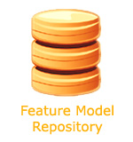
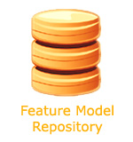

Real Feature Models
You can either access statistics about the feature model repository or the repository itself. Please, click on the appropriate icon below.
 |
 |

You can either access statistics about the feature model repository or the repository itself. Please, click on the appropriate icon below.
|
 |
The models below were generated automatically to support empirical studies on the performance and scalability of automated techniques for reasoning on feature models. In each generated model, each type of mandatory, optional, inclusive-OR and exclusive-OR feature was added with equal probability. The branching factor (number of children per parent node) of the feature tree varied from 1 to 6. The cross-tree constraints were generated as a single Random 3-CNF formula. More details about these kinds of generated feature models can be found in the section below about our feature model generator tool.
| Collection Name | Number of Models | Model Type | Consistency | #Features | #3-CNF Variables | 3-CNF Clause Density | Download |
|---|---|---|---|---|---|---|---|
| SPLOT-3CNF-FM-500-50-1.00-SAT | 10 | 3-CNF-FM | All consistent | 500 | 50 | 1.0 | Click |
| SPLOT-3CNF-FM-1000-100-1.00-SAT | 10 | 3-CNF-FM | All consistent | 1000 | 100 | 1.0 | Click |
| SPLOT-3CNF-FM-2000-200-1.00-SAT | 10 | 3-CNF-FM | All consistent | 2000 | 200 | 0.5 | Click |
| SPLOT-3CNF-FM-5000-500-1.00-SAT | 10 | 3-CNF-FM | All consistent | 5000 | 500 | 0.3 | Click |
| SPLOT-3CNF-FM-10000-1000-1.00-SAT | 10 | 3-CNF-FM | All consistent | 10000 | 1000 | 0.1 | Click |
| SPLOT-3CNF-FM-500-50-1.00-UNSAT | 10 | 3-CNF-FM | All INconsistent | 500 | 50 | 1.0 | Click |
| SPLOT-3CNF-FM-1000-100-1.00-UNSAT | 10 | 3-CNF-FM | All INconsistent | 1000 | 100 | 1.0 | Click |
| SPLOT-3CNF-FM-2000-200-1.00-UNSAT | 10 | 3-CNF-FM | All INconsistent | 2000 | 200 | 1.0 | Click |
If you need to generate customised feature models you can download our SPLOT Feature Model Generator tool. The tool generates a special kind of feature models called 3-CNF Feature Models (3-CNF-FMs). Such models consist of a feature tree and a set of cross-tree constraints represented by a single Random 3-CNF formula. Research has shown that, when translated to a SAT problem, 3-CNF-FMs tend to induce much harder problems than most of realistic models which makes 3-CNF-FMs a powerful benchmark for testing the performance and the scalability of feature model reasoning techniques.
There are two possible ways to submit a model to SPLOT's feature model repository:
Currently, SPLOT requires feature models to be encoded in the SXFM format. Thankfully, we provide an API that allows reading SXFM files into Java objects which can greatly facilitate format conversions.